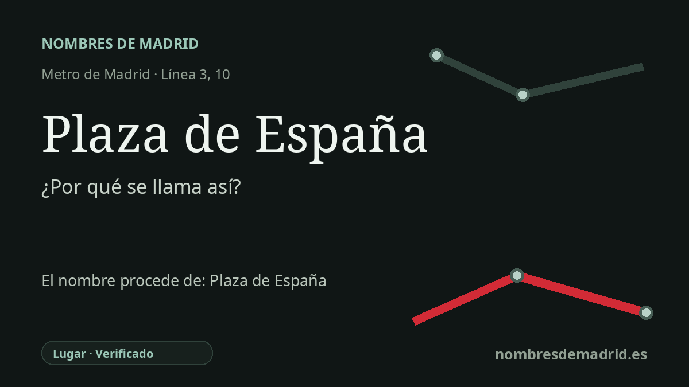

Publicado el · Investigación de Nombres de Madrid · Cómo verificamos cada origen · 9 fuentes consultadas
Respuesta rápida
Debe su nombre a la Plaza de España de Madrid, nacida donde el cuartel de San Gil y la antigua plaza de armas de San Marcial dieron paso al remate occidental de la Gran Vía. Su identidad moderna quedó marcada por el monumento a Cervantes y por las reformas urbanas de los siglos XX y XXI.
La historia del nombre
La estación de Plaza de España se llama así por la gran plaza situada encima y a su alrededor, no por una persona ni por España en abstracto. El nombre del Metro reproduce el de la Plaza de España de Madrid, el espacio cívico que remata la Gran Vía por el oeste y se abre junto a la calle de la Princesa, la calle de los Reyes y el eje histórico hacia el Palacio Real.
Antes de existir la plaza moderna, este entorno estuvo ligado a San Marcial y al cuartel de San Gil. La documentación patrimonial municipal describe la plaza de armas de San Marcial, situada delante del cuartel, como el origen de la futura Plaza de España. El cuartel de San Gil, vinculado al Madrid dieciochesco de Francesco Sabatini, ocupaba un altozano estratégico junto al palacio y terminó siendo un obstáculo para el crecimiento y la modernización de la ciudad hacia el oeste.
El nombre Plaza de España aparece en el proyecto urbano posterior a la desaparición del cuartel. Una noticia de La Correspondencia de España de 1910, digitalizada por Memoria de Madrid, recoge que el Ayuntamiento tomó en consideración formar una gran plaza denominada de España sobre los solares resultantes del derribo del antiguo cuartel de San Gil. Un estudio histórico municipal posterior explica que, tras el derribo de 1908, el primer plan de urbanización se planteó en 1911 y que, aunque aquel proyecto no se materializó plenamente, el nombre quedó fijado.
El símbolo más conocido de la plaza es el monumento a Cervantes. La declaración regional del monumento como Bien de Interés Patrimonial señala que la idea se venía gestando desde 1905, que en 1915 se decidió ubicarlo en la nueva Plaza de España y que el equipo ganador fue elegido en 1916. El monumento se inauguró solo parcialmente en 1929 y no se dio por terminado hasta 1969, de modo que la imagen actual de la plaza se construyó durante décadas y no en un único momento.
La historia del Metro añade otra capa. La estación de la línea 3 en Plaza de España abrió con la prolongación Sol-Argüelles en julio de 1941; la estación profunda del Suburbano, incorporada después a la línea 10, entró en servicio el 6 de febrero de 1961 entre Plaza de España y Carabanchel. El origen toponímico está bien documentado, pero la apertura de 1925 no corresponde a las líneas 3 y 10, y la conclusión del monumento a Cervantes en los años sesenta no se reduce a la llegada tardía del grupo en bronce de don Quijote y Sancho.